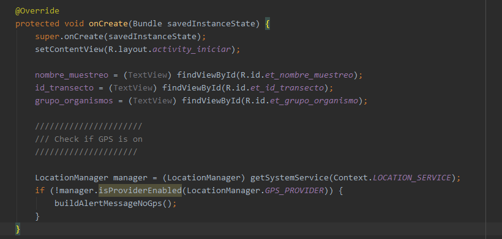
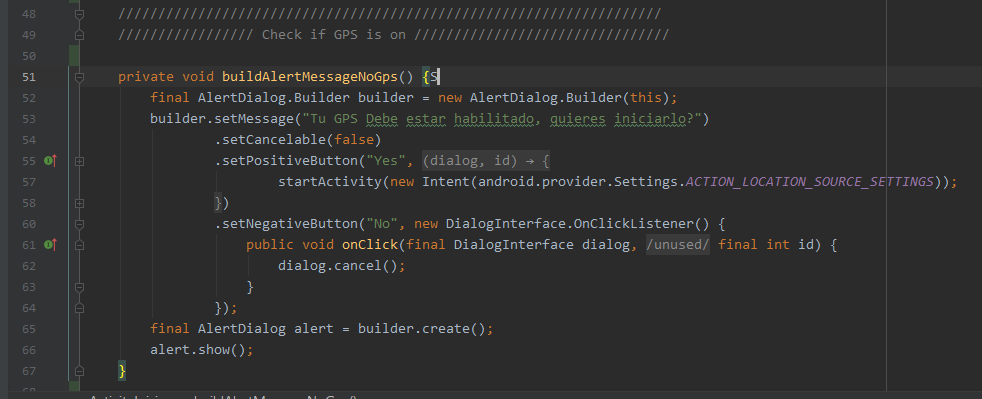
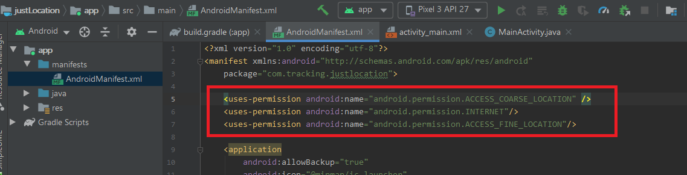
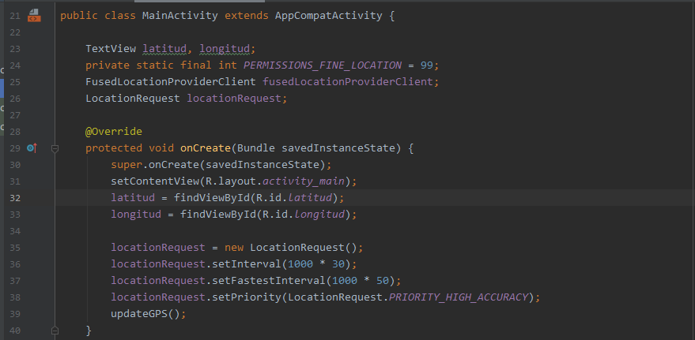
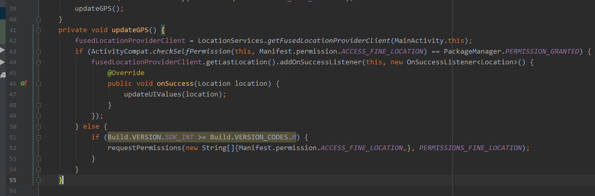
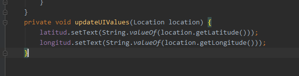

Este procedimiento consiste en un if, que verifica la disponibilidad de la ubicación mediante LocationManager, en caso de no tenerla envía a un método que le pide al usuario iniciar la ubicación a través del GPS. Este if se ubica en el método onCreate del activity en donde queremos hacer la verificación, preferiblemente anterior al activity que lo emplea,
En el metodo onCreate colocamos el siguiente fragmento:
LocationManager manager = (LocationManager) getSystemService(Context.LOCATION_SERVICE);
if (!manager.isProviderEnabled(LocationManager.GPS_PROVIDER)) {
buildAlertMessageNoGps();
}

Adicionalmente creamos un método (llamado: buildAlertMessageNoGps), el cual va a abrir una ventana de alerta que le indica al usuario prender el GPS, mediante: AlertDialog.Builder; tengamos presente que este método es llamado con el ”if”en caso de no detectar datos de GPS
private void buildAlertMessageNoGps() {
final AlertDialog.Builder builder = new AlertDialog.Builder(this);
builder.setMessage("Tu GPS Debe estar habilitado, quieres iniciarlo?")
.setCancelable(false)
.setPositiveButton("Yes", new DialogInterface.OnClickListener() {
public void onClick(@SuppressWarnings("unused") final DialogInterface dialog, @SuppressWarnings("unused") final int id) {
startActivity(new Intent(android.provider.Settings.ACTION_LOCATION_SOURCE_SETTINGS));
}
})
.setNegativeButton("No", new DialogInterface.OnClickListener() {
public void onClick(final DialogInterface dialog, @SuppressWarnings("unused") final int id) {
dialog.cancel();
}
});
final AlertDialog alert = builder.create();
alert.show();
}

Para obtener los datos de ubicación (latitud, longitud, altura, velocidad, precisión) se deben seguir los siguientes pasos:
1. Para agregar la librería de google play service - Location, vamos a
File/Project Structure/Dependencies/ en la ventana de All Dependencies +
Entramos a Library Dependency y en el buscador de la primera ventana (Step 1.), colocamos:
com.google.android.gms:play-services-location: :
Seleccionamos la última versión que nos indique en la ventana de abajo, le damos a OK, luego en la
ventana que sigue Apply y OK.
Verificamos la adecuada inclucion, en el archivo gradle, en donde ahora se debe ver en el atributo de
dependecias: implementation ' com.google.android.gms:play-services-location: 17.0.1'
Cabe resaltar que en la presente foto también se observa la librería de google-play, la cual fue
agregada con antelación y por defecto no viene incluida en los poyectos, pero genera error, debido a que
ella incluye -location; por consiguiente solo se deja la libreria de services-location: 17.0.1
2. para agregar el permiso en el Manifest, basta con colocar tres líneas de atributos uses-permission, para internet, coarse_location y fine_location; por fuera y siguiente al atributo manifest.
3. ahora nos dirigimos al archivo .java en donde queremos obtener la ubicación y
colocamos el código. El cual está conformado por un bloque en donde declaramos una constante a la que
llamaremos: PERMISSIONS_FINE_LOCATION = 99, las variables FusedLocationProviderClient y
LocationRequest como variables generales; en la foto ademas se observa los enlaces con
TextView latitud, longitud;
FusedLocationProviderClient fusedLocationProviderClient;
LocationRequest locationRequest;
@Override
protected void onCreate(Bundle savedInstanceState) {
super.onCreate(savedInstanceState);
setContentView(R.layout.activity_main);
latitud = findViewById(R.id.latitud);
longitud =findViewById(R.id.longitud);
locationRequest = new LocationRequest();
locationRequest.setInterval(1000 * 30);
locationRequest.setFastestInterval(1000 * 50);
locationRequest.setPriority(LocationRequest.PRIORITY_HIGH_ACCURACY);
updateGPS();
}

4. En el método updateGPS() que recién creamos, inicializamos el objeto
fusedLocationProviderClient con LocationServices y declaramos un if-else que verifica
el permiso, en caso de ser afirmativo nos remite a otro método(con parámetros Location), que vamos a crear
y llamar: updateUIValues(Location location)
Precaución: en el fragmento de código siguiente, etiquetas de mayor y menor que; fueron incluidas
con asterisco para que pudieran ser interpretadas por el HTML; pero no hacen parte del
codigo
private void updateGPS() {
fusedLocationProviderClient = LocationServices.getFusedLocationProviderClient(MainActivity.this);
if (ActivityCompat.checkSelfPermission(this, Manifest.permission.ACCESS_FINE_LOCATION) == PackageManager.PERMISSION_GRANTED) {
fusedLocationProviderClient.getLastLocation().addOnSuccessListener(this, new OnSuccessListener<*Location*>() {
@Override
public void onSuccess(Location location) {
updateUIValues(location);
}
});
} else {
if (Build.VERSION.SDK_INT >= Build.VERSION_CODES.M) {
requestPermissions(new String[]{Manifest.permission.ACCESS_FINE_LOCATION,}, PERMISSIONS_FINE_LOCATION);
}
}
}
}

5. Desarrollamos el método (updateUIValues(Location location)) que es solicitado desde el anterior; en donde obtenemos los valores de ubicación mediante los métodos: getLatitude() y getLongitude()
private void updateUIValues(Location location) {
latitud.setText(String.valueOf(location.getLatitude()));
longitud.setText(String.valueOf(location.getLongitude()));
}
